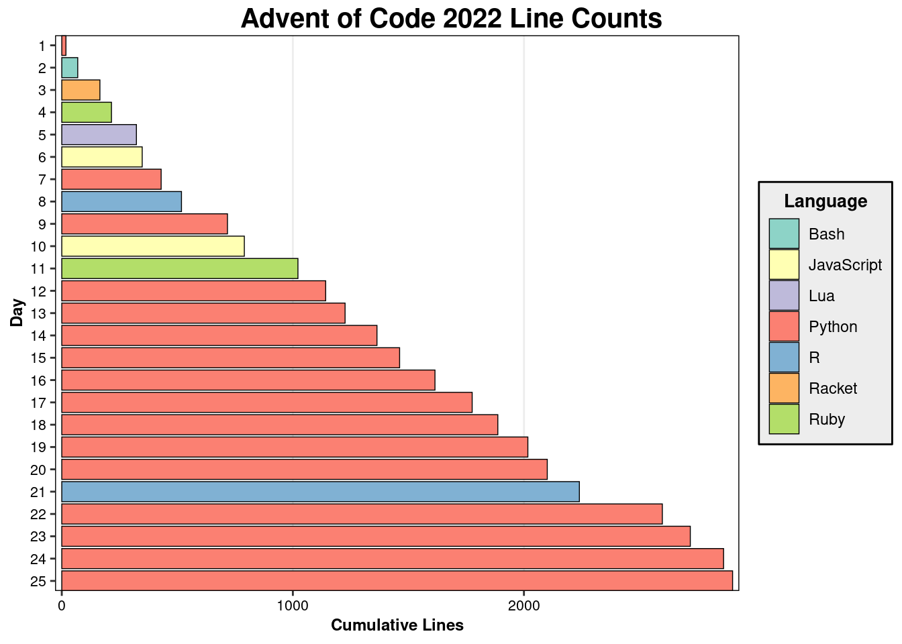

Overview
Advent of Code 2022 is over. After a few frantic weeks, I’ve completed both parts of all 25 puzzles. And, like most years, it was a wild ride, full of frustration and triumph in equal measure. Eric Wastl and his team have once again delivered. When I wasn’t coding, I was scanning documentation or trawling the subreddit to look at memes find suggestions for better algorithms. To my surprise, I managed to finish the whole calendar before the New Year. The year felt a little easier than 2021, though of course I have much more experience than I did then.
This year’s narrative had the player assisting the Elves’ expedition deep into the jungle, in search of a rare fruit that powers the reindeer’s flight. This premise has lower stakes than past years, which had you scrambling to prevent some catastrophe from ruining Christmas, but the change of pace is welcome.
We all know the plot is just a device to string puzzle premises together, but I make special note of it because I think it’s the secret to Advent of Code’s popularity. Problems are just more enjoyable when framed by a silly scenario. “Find the path on this unidirected graph maximizing this dynamic weighting function” is a work specification; “Find how to open the right valves to release as much pressure as possible so you and the herd of elephants following you can escape the erupting volcano” is fun.
(One other amusing consequence of the narrative: if you follow the common style advice to name variables and functions in terms of the problem you are modeling, your code will teem with names like ModulusMonkey and nearest_elf).
I set out to use as many languages as possible, even those I lacked confidence in. For the first week or so, I found this easier than expected. Even JavaScript, which I hadn’t used seriously in a long time, I found simple enough to use. But it couldn’t last. As the puzzles got tougher past day 10 or so, I found myself retreating to the familiarity of Python. Maybe I’ll do better in this regard next year.
Here’s a plot showing my choice of language for each day with the cumulative line count:
Methods
If this year had a theme, it was Cartesian coordinates. Every year has at least a few puzzles involving them, but they showed up again and again this year. The concept often appeared with a clever twist, such as modeling falling shapes (Day 17) or computing three-dimensional surface areas (day 18).
For these types of problems, I like to use a sparse map that stores only coordinates with some property of interest. For day 18, for example, this was coordinates covered by a falling shape. I once used tuples to represent coordinates, but now I use a tried-and-true hack: complex numbers. Not only is this trick effective, it gives me the guilty thrill of using a workaround it would be reckless to use in production code.
As always, a few problems frustrated me. Day 9 caught me off guard. It’s tricky, but nothing terrible: each knot on the rope follows simple movement rules that you can infer by studying the example input. Instead, I developed a complicated solution for part 1 that wouldn’t generalize to part 2. The problem became easy when I took a break and realized all I had to do was keep each knot adjacent to its leading knot.
Day 11 stymied me for a different reason: it could be solved a simple trick that I just couldn’t see. Part 2 introduces a rule change that allows certain values to grow without bound. You have to recognize that they follow a cycle whose period is the lowest common multiple of divisors specified in the problem, then modulo divide by that value. This isn’t too hard to figure out, but I didn’t spend enough time planning an approach. I ended up finding the correct method only after trying almost everything else. A little number theory would have saved me a lot of trouble.
I also got badly stuck on day 16, but that one was horrible for everyone, so there’s nothing to analyze.
Difficulty
I think the puzzle design this year was perhaps the best yet. Many puzzles were hard, some very hard, but none were complicated. The best-designed puzzles test insight and ability to to adapt a useful algorithm to a novel situation. Those with complicated rules introduce an additional challenge: correctly implementing every detail of the specification. This rewards diligence more than insight and means even tiny mistakes will yield the wrong answer. Complication isn’t _unfair per se, and most real software specifications are very complicated. But few people consider attending to minutiae the best part of programming; consider the mixed reception to 2018 day 15, which I’m not even brave enough to attempt.
This year, the hard puzzles were hard because a straightforward approach could not solve them. Days 16 and 19, probably the hardest, presented tough pathfinding scenarios. You had to wrangle each input into a graph structure (possibly implicit), then find a way to reduce the problem space to a manageable size that brepth-first search could handle. Without some clever optimization, any solution would probably take much too long Both tasks involve lateral thinking and creativity; implementing Wikipedia’s Dijkstra pseudocode wouldn’t cut it. Some puzzles involved simulation, but not with complicated rules; the difficulty instead came from understanding the subtleties in the interaction of simple rules (e.g., Day 9). Overall, the puzzles have become leaner but no less challenging. I appreciate the work it must have taken to refine a successful formula and make it still better.
I also encountered, or implemented for the first time, several other useful techniques: cycle detection, bit-encoding subsets, flood-filling, and more. I never come out of a year without at least a few new tricks.
My favorite puzzle was day 21. I solved it in R. Part 1 is fairly simple, requiring you to parse and evaluate a large expression recursively. Part 2 introduces a nasty escalation: one of the names referenced in the expression (the one labeled “humn”, naturally, since the others refer to monkeys) is bound to an unknown value, not a constant, and you have to solve for it.
I’ve always liked expression manipulation. R, with its strong LISP influence, makes it easy to convert between R code, objects representing the code’s abstract syntax tree, and S-expression-like lists of functions and arguments. So I attacked part 2 by converting the equation to be solved into a nested list of S-expressions. Since the right side of the equation resolved to a constant, I could solve it by simply inverting each operation on the left-hand side until I had isolated the unknown. I learned later that several other approaches worked well, such as finding the solution by binary search or using complex-number hackery. It was fun and rewarding to work through, and the part 2 twist is a classic.
Closing Thoughts
Overall, it was a fun and rewarding year, and I’m mostly pleased with my performance. I approached puzzles strategically instead of instinctively. I mostly picked the right data structures, and avoided overengineering my solutions. I knew enough about pathfinding algorithms to get through the tougher puzzles. Don’t get me wrong: I’m a long way from the people who can crank out an idiomatic Python solution that runs in 50 microseconds any given day. But I’m improving, and that pleases me.
I had better learn the Chinese Remainder Theorem before December 2023, though. Can’t be too hard, right?